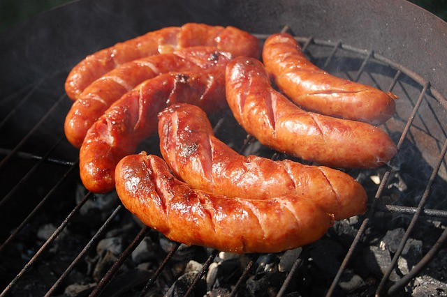

Sausages

Description
This is a recipe for making cooked sausages, a very quick and simple way of making a meat snack.
Ingredients
- Three uncooked sausages (any kind)
- 1 tsp vegetable oil
- Salt, pepper, or herbs (optional)
Steps
- Add the oil to a frying pan.
- Heat the pan over medium heat for 2 minutes.
- Add the sausages to your pan.
- Every three minutes, turn the sausages over so all sides heat evenly.
- Sprinkle the sausages with salt, papper, or herbs, if wanted.
- After 12 minutes of cooking, take the sausages out of the pan.
- Let the sausages cool down for 2 minutes and eat them.
Home